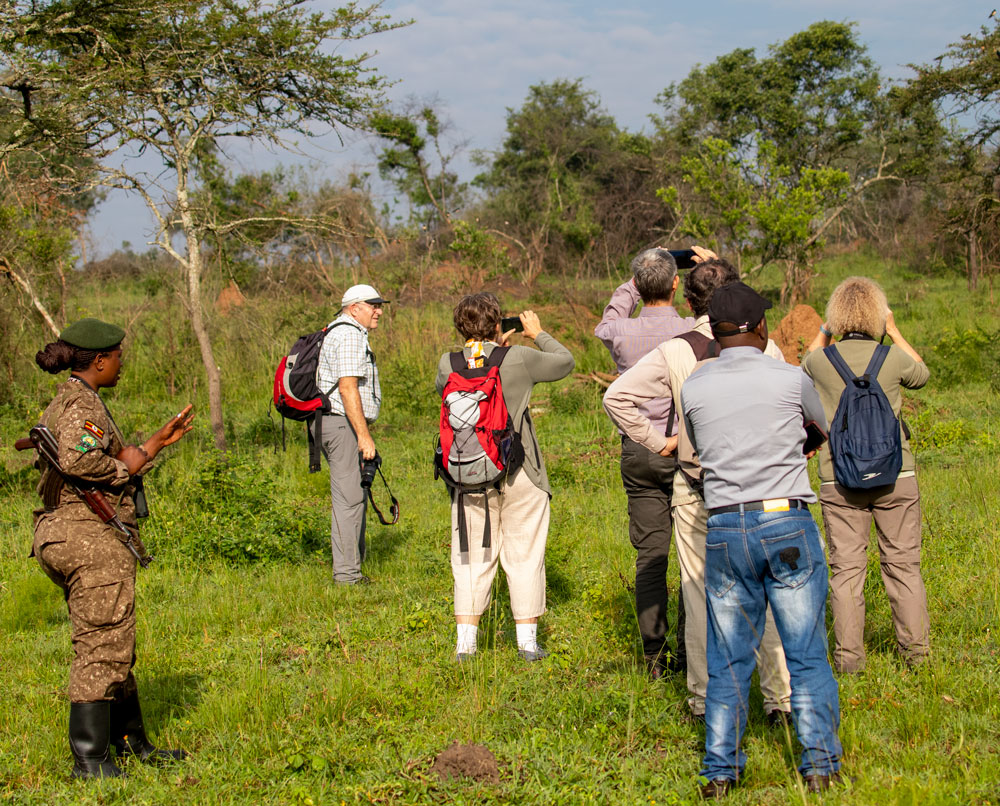
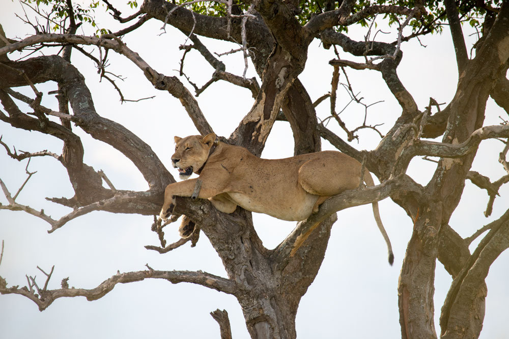

9-Day Gorilla & Wildlife Adventure Safari
Overview
Experience the best of Uganda in 9 unforgettable days, from walking safaris in Lake Mburo National Park to
tracking mountain gorillas in Bwindi Impenetrable Forest. Enjoy the scenic beauty of Lake Bunyonyi, thrilling
game drives in Queen Elizabeth National Park, and chimpanzee tracking in Kibale Forest and Bigodi community
and swamp walk.
This journey blends wildlife, culture, and breathtaking landscapes—showcasing Uganda’s incredible diversity
and natural beauty.

Day 1
Transfer to Lake Mburo National Park.
Begin your adventure with a warm welcome and safari briefing from your Gari Trips Uganda guide. Depart
from Kampala or Entebbe, heading southwest towards Lake Mburo National Park. En route, stop at the Equator
for photo opportunities and enjoy a delicious lunch.
Arrive at the park, home to zebras, giraffes, buffaloes, and antelopes, set among acacia-dotted savannahs.
Later, relax at your lodge and soak in panoramic views of the park.
Overnight: Rwakobo Rock Lodge

Day 2
Walking Safari in Lake Mburo National Park.
After breakfast, embark on a guided walking safari, a rare opportunity to explore the park on foot.
Without large predators, Lake Mburo offers a safe and intimate wildlife experience with elands, impalas,
and warthogs often seen up close. Return to the lodge for lunch and relaxation by the pool. Enjoy a peaceful
evening surrounded by nature.
Overnight: Rwakobo Rock Lodge

Day 3
Transfer to Bwindi Impenetrable Forest.
Enjoy breakfast and begin a scenic drive through the Kigezi Highlands, known as the “Switzerland of Africa.”
Admire terraced hills, crater lakes, and misty mountain vistas en route to Bwindi Impenetrable Forest, home
of the endangered mountain gorilla. Arrive and settle into your lodge for relaxation ahead of the next day’s
adventure.
Overnight: Rushaga Gorilla Lodge

Day 4
Gorilla Tracking & Transfer to Lake Bunyonyi.
Start early with breakfast before heading to the park headquarters for a gorilla tracking briefing. Venture
into Bwindi’s dense jungle with expert guides to encounter a habituated gorilla family. Spend an hour observing
these gentle giants in their natural habitat—a once-in-a-lifetime experience.
After your trek, enjoy a scenic transfer to the serene Lake Bunyonyi, dotted with lush islands.
Overnight: Arcadia Lodges Lake Bunyonyi

Day 5
Transfer to Queen Elizabeth National Park.
After breakfast, depart Lake Bunyonyi and journey through scenic countryside and tea plantations to
Queen Elizabeth National Park. En route, stop at the Twin Crater Lakes for photos. Arrive in the afternoon,
relax, and prepare for an evening game drive through the park’s savannah plains.
Overnight: Bush Lodge

Day 6
Morning Game Drive & Kazinga Channel Boat Cruise.
Begin the day with a morning game drive in the Kasenyi Plains—renowned for lions, elephants, buffaloes,
and Uganda kobs. Return for lunch, then embark on a boat cruise along the Kazinga Channel, where hippos,
crocodiles, and vibrant birdlife thrive along the water’s edge.
Overnight: Bush Lodge

Day 7
Crater Visit & Transfer to Kibale Forest.
After a relaxed breakfast, explore the crater lakes region, a stunning landscape of volcanic formations
and lush forests. Continue to Kibale Forest National Park, celebrated for its primates and scenic surroundings.
Arrive in the evening for dinner and relaxation.
Overnight: Kibale Forest Camp

Day 8
Chimpanzee Tracking & Bigodi Community Visit.
After breakfast, join a chimpanzee tracking experience in Kibale Forest, home to the largest concentration
of primates in East Africa. Enjoy observing chimps as they feed, play, and swing through the trees. In the
afternoon, visit the Bigodi Wetland Sanctuary, a community-led conservation area where you’ll engage with
locals and learn about their culture and eco-tourism efforts.
Overnight: Kibale Forest Camp

Day 9
Return to Entebbe.
After breakfast, begin your return journey to Entebbe. Depending on your flight time, you may stop for
souvenirs or enjoy lunch along the way. Arrive at Entebbe International Airport in time for your onward
flight, marking the end of your remarkable Ugandan safari adventure.
End of Safari
Thank you for traveling with Gari Trips Uganda—your trusted partner for authentic safari experiences.
Things to pack when coming for Safari.
- Waterproof Hiking Shoes.
- Long cotton socks.
- Face masks.
- Gardening gloves.
- Long-sleeved Shirts & Sunscreen.
- A Hat & a Rain jacket.
- Light backpack & Insect repellents.
- A Camera & a Pair of Binoculars.
- Drinking water bottle and Energy giving snacks.
Inclusions
- A professional driver/guide
- All transportation (Unless labeled as optional)
- All Taxes/VAT.
- Meals (As specified in the day-by-day section).
- Those searching for photographic safaris in Uganda.
Exclusions
- International flights (From/to home).
- Additional accommodation before and at the end of the tour.
- Tips (Tipping guideline US$10.00 pp per day).
- Personal items (Souvenirs, travel insurance, visa fees, etc.).
- Government imposed increase of taxes and/or park fees.